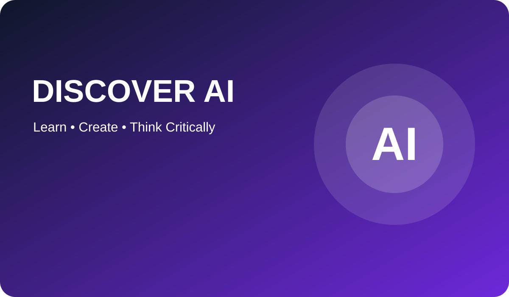
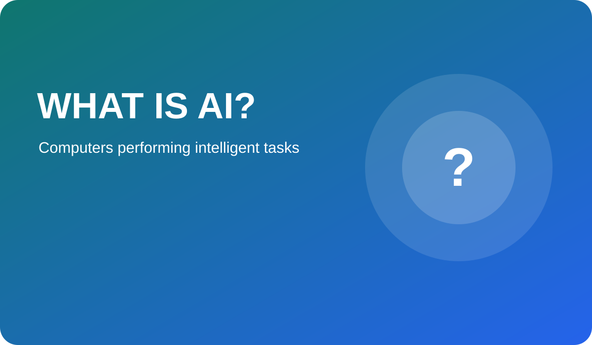
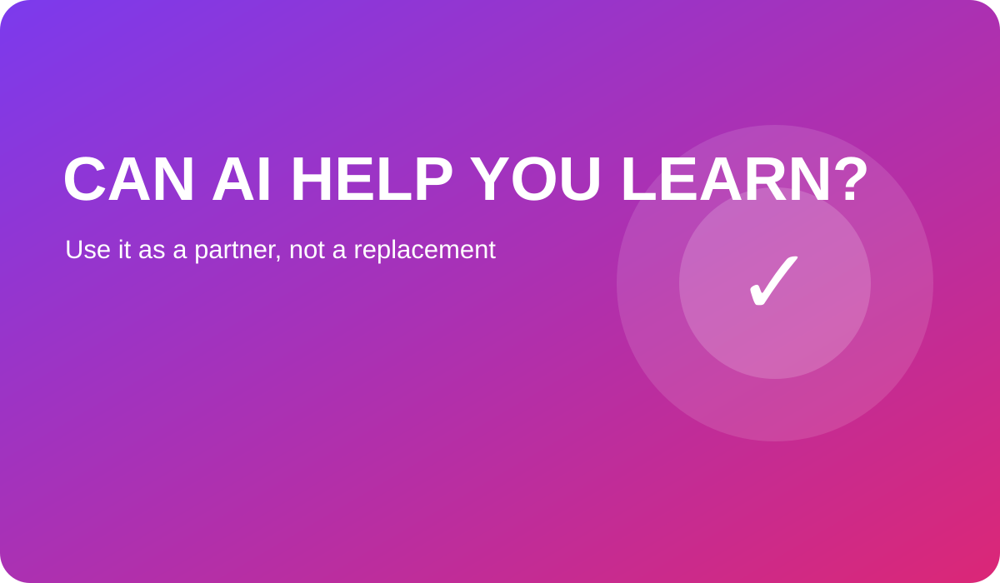

Discover the World of Artificial Intelligence
Learn how popular AI tools work, where they are useful, and how to use them safely and responsibly.


What is Artificial Intelligence?
Artificial Intelligence, usually called AI, is technology that allows computers to perform tasks that normally need human intelligence.
AI can recognise patterns, understand language, recommend content, generate images and help solve problems. It does not think exactly like a human, and it can still make mistakes.
AI Around Us
You may already use AI every day without noticing it.
Streaming recommendations
Services suggest films, music or videos based on what you previously watched or listened to.
Maps and travel
Navigation apps examine traffic information and suggest a faster route.
Voice assistants
AI recognises spoken language and tries to answer questions or complete tasks.
Online shopping
Websites recommend products based on searches, purchases and similar users.
Phone cameras
AI can identify faces, improve images and organise photographs.
Email protection
Spam filters use patterns to identify suspicious or unwanted messages.
AI TOOL OF THE MONTH
ChatGPT
ChatGPT is a conversational AI assistant. Students can ask it to explain a topic, create practice questions or suggest ways to improve a piece of writing.
Try this prompt
“Explain binary numbers to a Year 8 student using a simple real-life example.”
Remember: Check important facts and do not copy AI-generated work as your own.
Learn about ChatGPTWhich AI Tool Should I Use?
Different tools are useful for different tasks. Choose the tool that matches your purpose.
Homework explanations
Try ChatGPT
Useful for simplifying difficult topics and generating practice questions.
Learn more →Research and comparison
Try Gemini
Useful for comparing ideas and supporting online research.
Learn more →Revision from your notes
Try NotebookLM
Useful for working with trusted documents selected by the learner.
Learn more →Office and presentations
Try Copilot
Useful for planning documents, spreadsheets and presentations.
Learn more →Website prototypes
Try Lovable
Useful for turning a clear idea into an early website or app prototype.
Learn more →Did You Know?
AI can translate text, but meaning and tone still need human checking.
Doctors and scientists use AI to find patterns in large amounts of data.
AI-generated answers may sound confident even when they are incorrect.
Good AI use requires creativity, clear instructions and critical thinking.

Can AI Help You Become a Better Learner?
AI can be a useful learning partner when it helps you practise, explain and reflect. For example, it can create a quiz, give feedback on a paragraph or show another way to solve a problem.
However, learning still requires your own effort. If AI completes every task for you, you may produce work without understanding it.
A better approach
- Attempt the task yourself first.
- Ask AI for an explanation or example.
- Check the response using reliable sources.
- Rewrite the idea using your own understanding.
Quick AI Safety Tips
Protect your privacy
Do not share passwords, addresses, private documents or personal details.
Check the answer
Compare important information with textbooks, teachers and trusted websites.
Be honest
Follow school rules and never present AI-generated work as entirely your own.
Think critically
Ask whether the response is accurate, fair, relevant and supported by evidence.